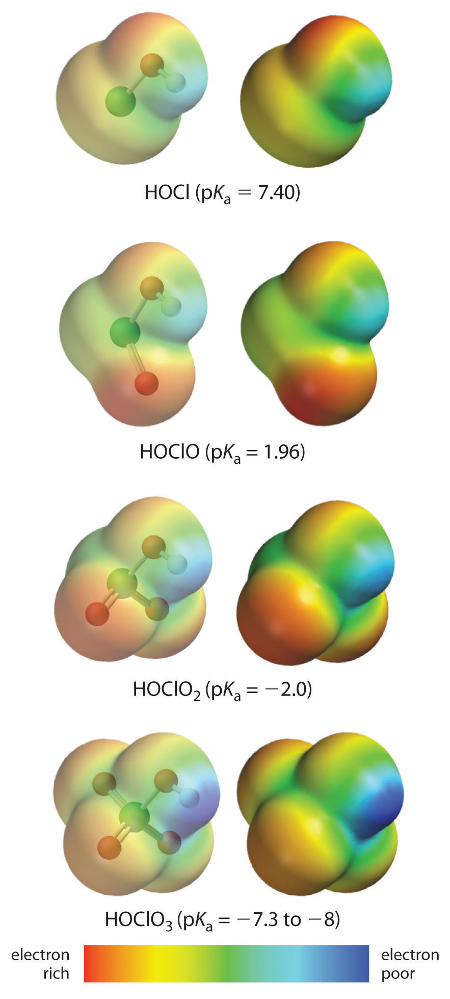
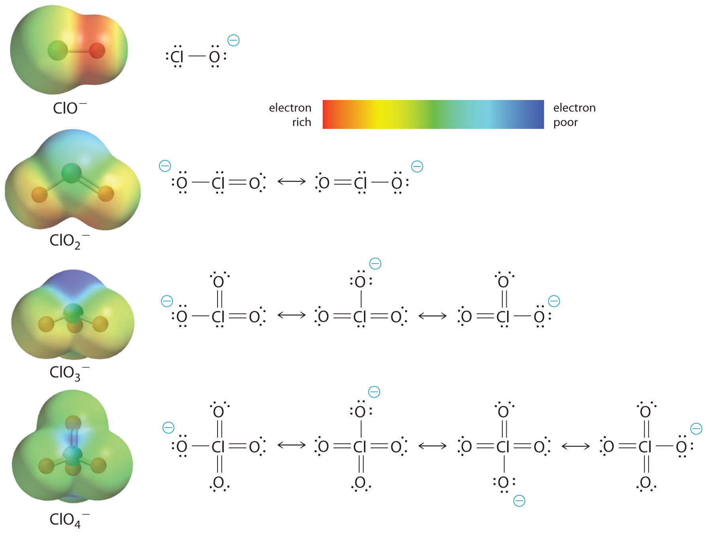

We have seen that the strengths of acids and bases vary over many orders of magnitude. In this section, we explore some of the structural and electronic factors that control the acidity or basicity of a molecule.
In general, the stronger the A–H or B–H+ bond, the less likely the bond is to break to form H+ ions and thus the less acidic the substance. This effect can be illustrated using the hydrogen halides:
| Relative Acid Strength | HF | < | HCl | < | HBr | < | HI |
|---|---|---|---|---|---|---|---|
| H–X Bond Energy (kJ/mol) | 570 | 432 | 366 | 298 | |||
| pKa | 3.20 | −6.1 | −8.9 | −9.3 |
The trend in bond energies is due to a steady decrease in overlap between the 1s orbital of hydrogen and the valence orbital of the halogen atom as the size of the halogen increases. The larger the atom to which H is bonded, the weaker the bond. Thus the bond between H and a large atom in a given family, such as I or Te, is weaker than the bond between H and a smaller atom in the same family, such as F or O. As a result, acid strengths of binary hydrides increase as we go down a column of the periodic table. For example, the order of acidity for the binary hydrides of Group 16 is as follows, with pKa values in parentheses: H2O (14.00 = pKw) < H2S (7.05) < H2Se (3.89) < H2Te (2.6).
Whether we write an acid–base reaction as or as the conjugate base (A− or B) contains one more lone pair of electrons than the parent acid (AH or BH+). Any factor that stabilizes the lone pair on the conjugate base favors dissociation of H+ and makes the parent acid a stronger acid. Let’s see how this explains the relative acidity of the binary hydrides of the elements in the second row of the periodic table. The observed order of increasing acidity is the following, with pKa values in parentheses: CH4 (~50) << NH3 (~36) < H2O (14.00) < HF (3.20). Consider, for example, the compounds at both ends of this series: methane and hydrogen fluoride. The conjugate base of CH4 is CH3−, and the conjugate base of HF is F−. Because fluorine is much more electronegative than carbon, fluorine can better stabilize the negative charge in the F− ion than carbon can stabilize the negative charge in the CH3− ion. Consequently, HF has a greater tendency to dissociate to form H+ and F− than does methane to form H+ and CH3−, making HF a much stronger acid than CH4.
The same trend is predicted by analyzing the properties of the conjugate acids. For a series of compounds of the general formula HE, as the electronegativity of E increases, the E–H bond becomes more polar, favoring dissociation to form E− and H+. Due to both the increasing stability of the conjugate base and the increasing polarization of the E–H bond in the conjugate acid, acid strengths of binary hydrides increase as we go from left to right across a row of the periodic table.
Acid strengths of binary hydrides increase as we go down a column or from left to right across a row of the periodic table.
Atoms or groups of atoms in a molecule other than those to which H is bonded can induce a change in the distribution of electrons within the molecule. This is called an inductive effect, and, much like the coordination of water to a metal ion, it can have a major effect on the acidity or basicity of the molecule. For example, the hypohalous acids (general formula HOX, with X representing a halogen) all have a hydrogen atom bonded to an oxygen atom. In aqueous solution, they all produce the following equilibrium:
Equation 16.37
The acidities of these acids vary by about three orders of magnitude, however, due to the difference in electronegativity of the halogen atoms:
| HOX | Electronegativity of X | pKa |
|---|---|---|
| HOCl | 3.0 | 7.40 |
| HOBr | 2.8 | 8.55 |
| HOI | 2.5 | 10.5 |
As the electronegativity of X increases, the distribution of electron density within the molecule changes: the electrons are drawn more strongly toward the halogen atom and, in turn, away from the H in the O–H bond, thus weakening the O–H bond and allowing dissociation of hydrogen as H+.
The acidity of oxoacids, with the general formula HOXOn (n = 0−3), depends strongly on the number of terminal oxygen atoms attached to the central atom X. As shown in Figure 16.14 "The Relationship between the Acid Strengths of the Oxoacids of Chlorine and the Electron Density on the O–H Unit", the Ka values of the oxoacids of chlorine increase by a factor of about 104 to 106 with each oxygen as successive oxygen atoms are added. The increase in acid strength with increasing number of terminal oxygen atoms is due to both an inductive effect and increased stabilization of the conjugate base.
Any inductive effect that withdraws electron density from an O–H bond increases the acidity of the compound.
Because oxygen is the second most electronegative element, adding terminal oxygen atoms causes electrons to be drawn away from the O–H bond, making it weaker and thereby increasing the strength of the acid. The colors in Figure 16.14 "The Relationship between the Acid Strengths of the Oxoacids of Chlorine and the Electron Density on the O–H Unit" show how the electrostatic potential, a measure of the strength of the interaction of a point charge at any place on the surface of the molecule, changes as the number of terminal oxygen atoms increases. In Figure 16.14 "The Relationship between the Acid Strengths of the Oxoacids of Chlorine and the Electron Density on the O–H Unit" and Figure 16.15 "The Relationship between Delocalization of the Negative Charge in the Oxoanions of Chlorine and the Number of Terminal Oxygen Atoms", blue corresponds to low electron densities, while red corresponds to high electron densities. The oxygen atom in the O–H unit becomes steadily less red from HClO to HClO4 (also written as HOClO3), while the H atom becomes steadily bluer, indicating that the electron density on the O–H unit decreases as the number of terminal oxygen atoms increases. The decrease in electron density in the O–H bond weakens it, making it easier to lose hydrogen as H+ ions, thereby increasing the strength of the acid.
Figure 16.14 The Relationship between the Acid Strengths of the Oxoacids of Chlorine and the Electron Density on the O–H Unit
These electrostatic potential maps show how the electron density on the O–H unit decreases as the number of terminal oxygen atoms increases. Blue corresponds to low electron densities, whereas red corresponds to high electron densities.
Source: Chlorine oxoacids pKa values from J. R. Bowser, Inorganic Chemistry (Pacific Grove, CA: Brooks-Cole,1993).
At least as important, however, is the effect of delocalization of the negative charge in the conjugate base. As shown in Figure 16.15 "The Relationship between Delocalization of the Negative Charge in the Oxoanions of Chlorine and the Number of Terminal Oxygen Atoms", the number of resonance structures that can be written for the oxoanions of chlorine increases as the number of terminal oxygen atoms increases, allowing the single negative charge to be delocalized over successively more oxygen atoms. The electrostatic potential plots in Figure 16.15 "The Relationship between Delocalization of the Negative Charge in the Oxoanions of Chlorine and the Number of Terminal Oxygen Atoms" demonstrate that the electron density on the terminal oxygen atoms decreases steadily as their number increases. The oxygen atom in ClO− is red, indicating that it is electron rich, and the color of oxygen progressively changes to green in ClO4−, indicating that the oxygen atoms are becoming steadily less electron rich through the series. For example, in the perchlorate ion (ClO4−), the single negative charge is delocalized over all four oxygen atoms, whereas in the hypochlorite ion (OCl−), the negative charge is largely localized on a single oxygen atom (Figure 16.15 "The Relationship between Delocalization of the Negative Charge in the Oxoanions of Chlorine and the Number of Terminal Oxygen Atoms"). As a result, the perchlorate ion has no localized negative charge to which a proton can bind. Consequently, the perchlorate anion has a much lower affinity for a proton than does the hypochlorite ion, and perchloric acid is one of the strongest acids known.
Electron delocalization in the conjugate base increases acid strength.
Figure 16.15 The Relationship between Delocalization of the Negative Charge in the Oxoanions of Chlorine and the Number of Terminal Oxygen Atoms
As the number of terminal oxygen atoms increases, the number of resonance structures that can be written for the oxoanions of chlorine also increases, and the single negative charge is delocalized over more oxygen atoms. As these electrostatic potential plots demonstrate, the electron density on the terminal oxygen atoms decreases steadily as their number increases. As the electron density on the oxygen atoms decreases, so does their affinity for a proton, making the anion less basic. As a result, the parent oxoacid is more acidic.
Similar inductive effects are also responsible for the trend in the acidities of oxoacids that have the same number of oxygen atoms as we go across a row of the periodic table from left to right. For example, H3PO4 is a weak acid, H2SO4 is a strong acid, and HClO4 is one of the strongest acids known. The number of terminal oxygen atoms increases steadily across the row, consistent with the observed increase in acidity. In addition, the electronegativity of the central atom increases steadily from P to S to Cl, which causes electrons to be drawn from oxygen to the central atom, weakening the O–H bond and increasing the strength of the oxoacid.
Careful inspection of the data in Table 16.4 "Values of p" shows two apparent anomalies: carbonic acid and phosphorous acid. If carbonic acid (H2CO3) were a discrete molecule with the structure (HO)2C=O, it would have a single terminal oxygen atom and should be comparable in acid strength to phosphoric acid (H3PO4), for which pKa1 = 2.16. Instead, the tabulated value of pKa1 for carbonic acid is 6.35, making it about 10,000 times weaker than expected. As we shall see in Section 16.6 "Buffers", however, H2CO3 is only a minor component of the aqueous solutions of CO2 that are referred to as carbonic acid. Similarly, if phosphorous acid (H3PO3) actually had the structure (HO)3P, it would have no terminal oxygen atoms attached to phosphorous. It would therefore be expected to be about as strong an acid as HOCl (pKa = 7.40). In fact, the pKa1 for phosphorous acid is 1.30, and the structure of phosphorous acid is (HO)2P(=O)H with one H atom directly bonded to P and one P=O bond. Thus the pKa1 for phosphorous acid is similar to that of other oxoacids with one terminal oxygen atom, such as H3PO4. Fortunately, phosphorous acid is the only common oxoacid in which a hydrogen atom is bonded to the central atom rather than oxygen.
Table 16.4 Values of pKa for Selected Polyprotic Acids and Bases
| Polyprotic Acids | Formula | p K a1 | p K a2 | p K a3 |
| carbonic acid* | “H2CO3” | 6.35 | 10.33 | |
| citric acid | HO2CCH2C(OH)(CO2H)CH2CO2H | 3.13 | 4.76 | 6.40 |
| malonic acid | HO2CCH2CO2H | 2.85 | 5.70 | |
| oxalic acid | HO2CCO2H | 1.25 | 3.81 | |
| phosphoric acid | H3PO4 | 2.16 | 7.21 | 12.32 |
| phosphorous acid | H3PO3 | 1.3 | 6.70 | |
| succinic acid | HO2CCH2CH2CO2H | 4.21 | 5.64 | |
| sulfuric acid | H2SO4 | −2.0 | 1.99 | |
| sulfurous acid* | “H2SO3” | 1.85 | 7.21 | |
| Polyprotic Bases | Formula | p K b1 | p K b2 | |
| ethylenediamine | H2N(CH2)2NH2 | 4.08 | 7.14 | |
| piperazine | HN(CH2CH2)2NH | 4.27 | 8.67 | |
| propylenediamine | H2N(CH2)3NH2 | 3.45 | 5.12 | |
| *H2CO3 and H2SO3 are at best minor components of aqueous solutions of CO2(g) and SO2(g), respectively, but such solutions are commonly referred to as containing carbonic acid and sulfurous acid, respectively. | ||||
|---|---|---|---|---|
Inductive effects are also observed in organic molecules that contain electronegative substituents. The magnitude of the electron-withdrawing effect depends on both the nature and the number of halogen substituents, as shown by the pKa values for several acetic acid derivatives:
As you might expect, fluorine, which is more electronegative than chlorine, causes a larger effect than chlorine, and the effect of three halogens is greater than the effect of two or one. Notice from these data that inductive effects can be quite large. For instance, replacing the –CH3 group of acetic acid by a –CF3 group results in about a 10,000-fold increase in acidity!
Arrange the compounds of each series in order of increasing acid or base strength.
The structures are shown here.
Given: series of compounds
Asked for: relative acid or base strengths
Strategy:
Use relative bond strengths, the stability of the conjugate base, and inductive effects to arrange the compounds in order of increasing tendency to ionize in aqueous solution.
Solution:
Although both sulfuric acid and sulfurous acid have two –OH groups, the sulfur atom in sulfuric acid is bonded to two terminal oxygen atoms versus one in sulfurous acid. Because oxygen is highly electronegative, sulfuric acid is the stronger acid because the negative charge on the anion is stabilized by the additional oxygen atom. In comparing sulfuric acid and fluorosulfonic acid, we note that fluorine is more electronegative than oxygen. Thus replacing an –OH by –F will remove more electron density from the central S atom, which will, in turn, remove electron density from the S–OH bond and the O–H bond. Because its O–H bond is weaker, FSO3H is a stronger acid than sulfuric acid. The predicted order of acid strengths given here is confirmed by the measured pKa values for these acids:
The structures of both trifluoramine and hydroxylamine are similar to that of ammonia. In trifluoramine, all of the hydrogen atoms in NH3 are replaced by fluorine atoms, whereas in hydroxylamine, one hydrogen atom is replaced by OH. Replacing the three hydrogen atoms by fluorine will withdraw electron density from N, making the lone electron pair on N less available to bond to an H+ ion. Thus NF3 is predicted to be a much weaker base than NH3. Similarly, because oxygen is more electronegative than hydrogen, replacing one hydrogen atom in NH3 by OH will make the amine less basic. Because oxygen is less electronegative than fluorine and only one hydrogen atom is replaced, however, the effect will be smaller. The predicted order of increasing base strength shown here is confirmed by the measured pKb values:
Trifluoramine is such a weak base that it does not react with aqueous solutions of strong acids. Hence its base ionization constant has not been measured.
Exercise
Arrange the compounds of each series in order of
Answer:
The acid–base strength of a molecule depends strongly on its structure. The weaker the A–H or B–H+ bond, the more likely it is to dissociate to form an H+ ion. In addition, any factor that stabilizes the lone pair on the conjugate base favors the dissociation of H+, making the conjugate acid a stronger acid. Atoms or groups of atoms elsewhere in a molecule can also be important in determining acid or base strength through an inductive effect, which can weaken an O–H bond and allow hydrogen to be more easily lost as H+ ions.
Section 16.3 "Molecular Structure and Acid–Base Strength" presented several factors that affect the relative strengths of acids and bases. For each pair, identify the most important factor in determining which is the stronger acid or base in aqueous solution.
The stability of the conjugate base is an important factor in determining the strength of an acid. Which would you expect to be the stronger acid in aqueous solution—C6H5NH3+ or NH4+? Justify your reasoning.
Explain why H2Se is a weaker acid than HBr.
Arrange the following in order of decreasing acid strength in aqueous solution: H3PO4, CH3PO3H2, and HClO3.
Arrange the following in order of increasing base strength in aqueous solution: CH3S−, OH−, and CF3S−.
Arrange the following in order of increasing acid strength in aqueous solution: HClO2, HNO2, and HNO3.
Do you expect H2SO3 or H2SeO3 to be the stronger acid? Why?
Give a plausible explanation for why CF3OH is a stronger acid than CH3OH in aqueous solution. Do you expect CHCl2CH2OH to be a stronger or a weaker acid than CH3OH? Why?
Do you expect Cl2NH or NH3 to be the stronger base in aqueous solution? Why?
CF3S− < CH3S− < OH− (strongest base)
NH3; Cl atoms withdraw electron density from N in Cl2NH.